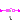
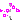

This package contains blocks that mark boundaries of a clocked partition
and transform a Boolean signal from one partition to the next. Especially,
the following blocks are provided:
| Boundary Type | Block Name | Description |
|---|---|---|
| continuous-time → clocked | Sample | Sample a continuous-time signal. |
| SampleClocked | Sample and associate a clock to the sampled scalar signal. | |
| SampleVectorizedAndClocked | Sample an input vector and associate a clock to the sampled vector signal. | |
| clocked → continuous-time | Hold | Hold a clocked signal with zero-order hold. |
| clocked → clocked | SubSample | Sub-sample a signal (output clock is slower as input clock). |
| SuperSample | Super-sample a signal (output clock is faster as input clock). | |
| ShiftSample | Shift a signal (output clock is delayed with respect to input clock). | |
| BackSample | Shift a signal and start the output clock before the input clock with a start value. | |
| within clocked partition | AssignClock | Assign a clock to a clocked scalar signal. |
| AssignClockVectorized | Assign a clock to a clocked vector signal. |
Additionally, package Utilities contains utility blocks that are used as building blocks for user-relevant blocks.
Extends from Modelica.Icons.Package (Icon for standard packages).
| Name | Description |
|---|---|
| Sample the continuous-time, Boolean input signal and provide it as clocked output signal (clock is infered) | |
|  SampleClocked | Sample the continuous-time, Boolean input signal and provide it as clocked output signal. The clock is provided as input signal |
| SampleVectorizedAndClocked | Sample the continuous-time, Boolean input signal vector and provide it as clocked output signal vector. The clock is provided as input signal |
| Hold the clocked, Boolean input signal and provide it as continuous-time output signal (zero order hold) | |
| Sub-sample the clocked Boolean input signal and provide it as clocked output signal | |
| Super-sample the clocked Boolean input signal and provide it as clocked output signal | |
| Shift the clocked Boolean input signal by a fraction of the last interval and and provide it as clocked output signal | |
| Shift clock of Boolean input signal backwards in time (and access the most recent value of the input at this new clock) | |
|  AssignClock | Assigns a clock to a clocked Boolean signal |
| AssignClockVectorized | Assigns a clock to a clocked Boolean signal vector |
| Utility components that are usually not directly used |
 Modelica_Synchronous.BooleanSignals.Sampler.Sample
Modelica_Synchronous.BooleanSignals.Sampler.Sample
This block for Boolean signals works similarly as the corresponding block for Real signals (see RealSignals.Sampler.Sample).
Analog to the corresponding Real signal block examples there exist two elementary examples, Sample1 and Sample2, for this Boolean block.
Extends from Modelica_Synchronous.BooleanSignals.Interfaces.PartialSISOSampler (Basic block used for sampling of Boolean signals).
| Name | Description |
|---|---|
| u | Connector of continuous-time, Real input signal |
| y | Connector of clocked, Real output signal |
This block for Boolean signals works similarly as the corresponding block for Real signals (see RealSignals.Sampler.SampleClocked).
Analog to the corresponding Real signal block example there exists an elementary example for this Boolean block.
Extends from Modelica_Synchronous.BooleanSignals.Interfaces.SamplerIcon (Basic graphical layout of block used for sampling of Boolean signals).
| Name | Description |
|---|---|
| clock | Output signal y is associated with this clock input |
| u | Connector of continuous-time, Boolean input signal |
| y | Connector of clocked, Boolean output signal |
This block for Boolean signals works similarly as the corresponding block for Real signals (see RealSignals.Sampler.SampleVectorizedAndClocked).
Analog to the corresponding Real signal block example there exists an elementary example for this Boolean block.
Extends from Modelica_Synchronous.BooleanSignals.Interfaces.SamplerIcon (Basic graphical layout of block used for sampling of Boolean signals).
| Name | Description |
|---|---|
| n | Size of input signal vector u (= size of output signal vector y) |
| Name | Description |
|---|---|
| u[n] | Connector of continuous-time, Boolean input signal vector |
| y[n] | Connector of clocked, Boolean output signal vector |
| clock | Output signal vector y is associated with this clock input |
This block for Boolean signals works similarly as the corresponding block for Real signals (see RealSignals.Sampler.Hold).
Analog to the corresponding Real signal block example there exists an elementary example for this Boolean block.
| Name | Description |
|---|---|
| y_start | Value of output y before the first tick of the clock associated to input u |
| Name | Description |
|---|---|
| u | Connector of clocked, Boolean input signal |
| y | Connector of continuous-time, Boolean output signal |
This block for Boolean signals works similarly as the corresponding block for Real signals (see RealSignals.Sampler.SubSample). /p>
Analog to the corresponding Real signal block example there exists an elementary example for this Boolean block.
| Name | Description |
|---|---|
| inferFactor | = true, if sub-sampling factor is inferred |
| factor | Sub-sampling factor >= 1 (ignored if inferFactor=true) |
| Name | Description |
|---|---|
| u | Connector of clocked, Boolean input signal |
| y | Connector of clocked, Boolean output signal (clock of y is slower as clock of u) |
 Modelica_Synchronous.BooleanSignals.Sampler.SuperSample
Modelica_Synchronous.BooleanSignals.Sampler.SuperSample
This block for Boolean signals works similarly as the corresponding block for Real signals (see RealSignals.Sampler.SuperSample).
Analog to the corresponding Real signal block example there exists an elementary example for this Boolean block.
| Name | Description |
|---|---|
| inferFactor | = true, if super-sampling factor is inferred |
| factor | Super-sampling factor >= 1 (ignored if inferFactor=true) |
| Name | Description |
|---|---|
| u | Connector of clocked, Boolean input signal |
| y | Connector of clocked, Boolean output signal (clock of y is faster as clock of u) |
 Modelica_Synchronous.BooleanSignals.Sampler.ShiftSample
Modelica_Synchronous.BooleanSignals.Sampler.ShiftSample
This block for Boolean signals works similarly as the corresponding block for Real signals (see RealSignals.Sampler.ShiftSample).
Analog to the corresponding Real signal block example there exists an elementary example for this Boolean block.
| Name | Description |
|---|---|
| Shift first clock activation for 'shiftCounter/resolution*interval(u)' seconds | |
| shiftCounter | Numerator of shifting formula |
| resolution | Denominator of shifting formula (ignored if inferShift=true) |
| Name | Description |
|---|---|
| u | Connector of clocked, Boolean input signal |
| y | Connector of clocked, Boolean output signal (clock of y is faster als clock of u) |
This block for Boolean signals works similarly as the corresponding block for Real signals (see RealSignals.Sampler.BackSample).
Analog to the corresponding Real signal block example there exists an elementary example for this Boolean block.
| Name | Description |
|---|---|
| y_start | Value of output y before the first clock tick of the input u |
| Shift first clock activation backwards in time for 'shiftCounter/resolution*interval(u)' seconds | |
| backCounter | Numerator of shifting formula |
| resolution | Denominator of shifting formula |
| Name | Description |
|---|---|
| u | Connector of clocked, Boolean input signal |
| y | Connector of clocked, Boolean output signal (clock of y is faster als clock of u) |
 Modelica_Synchronous.BooleanSignals.Sampler.AssignClock
Modelica_Synchronous.BooleanSignals.Sampler.AssignClock
This block for Boolean signals works similarly as the corresponding block for Real signals (see RealSignals.Sampler.AssignClock).
Analog to the corresponding Real signal block example there exists an elementary example for this Boolean block.
| Name | Description |
|---|---|
| u | Connector of clocked, Boolean input signal |
| y | Connector of clocked, Boolean output signal |
| clock |
Modelica_Synchronous.BooleanSignals.Sampler.AssignClockVectorized
This block for Boolean signals works similarly as the corresponding block for Real signals (see RealSignals.Sampler.AssignClockVectorized).
Analog to the corresponding Real signal block example there exists an elementary example for this Boolean block.
| Name | Description |
|---|---|
| n | Size of input signal vector u (= size of output signal vector y) |
| Name | Description |
|---|---|
| u[n] | Connector of clocked, Boolean input signal |
| y[n] | Connector of clocked, Boolean output signal |
| clock |